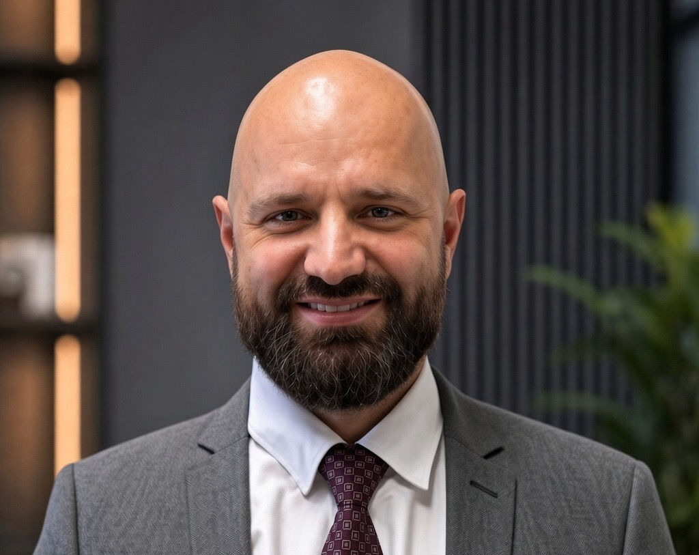

創辦人
簡教授為神經科學家，在非侵入性腦刺激領域擁有超過 20 年的研究及臨床經驗。他的事業始於奧地利維也納醫科大學，期間深入研究 TMS，為腦刺激科學建立了扎實的學術基礎。其後移居香港，持續從事相關研究及大學教學工作，並將科學成果轉化為臨床應用。
與大多數只熟悉單一治療的專家不同，簡教授廣泛使用多種 TMS 系統，以及不同類型的神經調控技術，包括多種腦電刺激（TES）、腦電盪治療（ECT）、腦脈衝刺激（TPS）及聚焦超聲波。這些廣泛經驗使他能夠深入了解各種技術的優勢、限制及最佳臨床應用。
在整個事業生涯中，簡教授結合學術研究、臨床實踐與技術評估，使其能夠批判性地審視新興治療方法，並在病人護理中應用最具實證基礎的方案。他的研究成果發表於多份領先的科學期刊，並曾在國際上培訓醫療專業人員及研究人員進行腦刺激技術。
憑藉在研究、教育及臨床實踐方面的經驗，簡教授創立了康然腦健有限公司，致力提供以科學為基礎、具實證支持的腦刺激治療。現時，中心作為專注於神經調控的專科服務，提供一般精神科或復康診所較少具備的專業知識及技術理解。
TMS 治療師
鄧先生是持有認證資格的腦磁激（TMS）治療師，持有心理學學士學位。他曾接受TMS操作的正規培訓，並在簡教授的指導下累積了多年豐富的臨床操作經驗。
他在TMS操作方面擁有實質的臨床經驗，曾為不同臨床情況的病人進行治療。他負責依照既定治療方案操作TMS儀器，在每次治療期間監察患者狀況，並確保治療以高精準度、一致及安全的方式進行。
除了TMS操作外，他亦接受培訓並具備進行臨床評估的經驗，以支援有系統的評估及整體治療過程。他的心理學學術背景有助與病人清晰溝通，並與監督臨床團隊緊密合作。